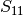

Networks¶
Contents
Introduction¶
For this tutorial, and the rest of the scikit-rf documentation, it is assumed that skrf has been imported as rf. Whether or not you follow this convention in your own code is up to you.
In [1]: import skrf as rf
If this produces an error, please see Installation. The code in this tutorial assumes that you are in the directory scikit-rf/doc.
Creating Networks¶
skrf provides an object for a N-port microwave Network. A Network can be created in a number of ways. One way is from data stored in a touchstone file.
In [1]: ring_slot = rf.Network('../skrf/data/ring slot.s2p')
A short description of the network will be printed out if entered onto the command line
In [1]: ring_slot
Out[1]: 2-Port Network: 'ring slot', 75-110 GHz, 201 pts, z0=[ 50.+0.j 50.+0.j]
Networks can also be created from a pickled Network (written by Network.write()),
In [1]: ring_slot = rf.Network('../skrf/data/ring slot.ntwk')
or from directly passing values for the frequency, s-paramters and z0.
In [1]: custom_ntwk = rf.Network(f = [1,2,3], s= [-1, 1j, 0], z0=50)
Seen Network.__init__() for more informaition on network creation.
Network Basics¶
The basic attributes of a microwave Network are provided by the following properties :
- Network.s : Scattering Parameter matrix.
- Network.z0 : Port Characteristic Impedance matrix.
- Network.frequency : Frequency Object.
All of the network parameters are represented internally as complex numpy.ndarray ‘s of shape FxNxN, where F is the number of frequency points and N is the number of ports.
In [1]: shape(ring_slot.s)
Out[1]: (201, 2, 2)
Note that the indexing starts at 0, so the first 10 values of  can be accessed with
In [1]: ring_slot.s[:10,0,0]
Out[1]:
array([-0.50372318+0.4578448j , -0.49581904+0.45707698j,
-0.48782538+0.4561578j , -0.47974451+0.45508186j,
-0.47157898+0.45384372j, -0.46333160+0.45243787j,
-0.45500548+0.45085878j, -0.44660400+0.44910088j,
-0.43813086+0.4471586j , -0.42959005+0.44502637j])
The Network object has numerous other properties and methods which can found in the Network docstring. If you are using IPython, then these properties and methods can be ‘tabbed’ out on the command line.
In [1]: short.s<TAB>
rf.data.line.s rf.data.line.s_arcl rf.data.line.s_im
rf.data.line.s11 rf.data.line.s_arcl_unwrap rf.data.line.s_mag
...
Note
Although this tutorial focuses on s-parametes, other network representations such as Impedance (Network.z) and Admittance Parameters (Network.y) are available as well, see Impedance and Admittance Parameters .
Amongst other things, the methods of the Network class provide convenient ways to plot components of the network parameters,
- Network.plot_s_db() : plot magnitude of s-parameters in log scale
- Network.plot_s_deg() : plot phase of s-parameters in degrees
- Network.plot_s_smith() : plot complex s-parameters on Smith Chart
- ...
To plot all four s-parameters of the ring_slot on the Smith Chart.
In [1]: ring_slot.plot_s_smith();

Or plot a pair of s-parameters individually, in log magnitude
In [1]: figure();
In [2]: ring_slot.plot_s_db(m=1, n=0); # s21
In [3]: ring_slot.plot_s_db(m=0, n=0); # s11
For more detailed information about plotting see Plotting.
Network Operators¶
Linear Operations¶
Element-wise mathematical operations on the scattering parameter matrices are accessible through overloaded operators. To illustrate their usage, load a couple Networks stored in the data module.
In [1]: short = rf.data.wr2p2_short
In [2]: delayshort = rf.data.wr2p2_delayshort
In [3]: short - delayshort
Out[3]: 1-Port Network: 'wr2p2,short', 330-500 GHz, 201 pts, z0=[ 50.+0.j]
In [4]: short + delayshort
Out[4]: 1-Port Network: 'wr2p2,short', 330-500 GHz, 201 pts, z0=[ 50.+0.j]
In [5]: short * delayshort
Out[5]: 1-Port Network: 'wr2p2,short', 330-500 GHz, 201 pts, z0=[ 50.+0.j]
In [6]: short / delayshort
Out[6]: 1-Port Network: 'wr2p2,short', 330-500 GHz, 201 pts, z0=[ 50.+0.j]
In [7]: short / delayshort
Out[7]: 1-Port Network: 'wr2p2,short', 330-500 GHz, 201 pts, z0=[ 50.+0.j]
All of these operations return Network types, so the methods and properties of a Network are available on the result. For example, to plot the complex difference between short and delay_short,
In [1]: figure();
In [2]: difference = (short- delayshort)
In [3]: difference.plot_s_mag()
Another common application is calculating the phase difference using the division operator,
In [1]: figure();
In [2]: (delayshort/short).plot_s_deg()
Linear operators can also be used with scalars or an numpy.ndarray that ais the same length as the Network.
In [1]: open = (short*-1)
In [2]: open.s[:3,...]
Out[2]:
array([[[ 1.-0.j]],
[[ 1.-0.j]],
[[ 1.-0.j]]])
In [3]: rando = open *rand(len(open))
In [4]: rando.s[:3,...]
Out[4]:
array([[[ 0.68786339+0.j]],
[[ 0.82213248+0.j]],
[[ 0.72761259+0.j]]])
Note that if you multiply a Network by an numpy.ndarray be sure to place the array on right side.
Cascading and De-embedding¶
Cascading and de-embeding 2-port Networks can also be done though operators. The cascade() function can be called through the power operator, **. To calculate a new network which is the cascaded connection of the two individual Networks line and short,
In [1]: short = rf.data.wr2p2_short
In [2]: line = rf.data.wr2p2_line
In [3]: delayshort = line ** short
De-embedding can be accomplished by cascading the inverse of a network. The inverse of a network is accessed through the property Network.inv. To de-embed the short from delay_short,
In [1]: short = line.inv ** delayshort
Connecting Multi-ports¶
skrf supports the connection of arbitrary ports of N-port networks. It accomplishes this using an algorithm called sub-network growth [1], available through the function connect(). Terminating one port of an ideal 3-way splitter can be done like so,
In [1]: tee = rf.Network('../skrf/data/tee.s3p')
To connect port 1 of the tee, to port 0 of the delay short,
In [1]: terminated_tee = rf.connect(tee,1,delayshort,0)
---------------------------------------------------------------------------
IndexError Traceback (most recent call last)
<ipython-input-1-2cf62d61ac01> in <module>()
----> 1 terminated_tee = rf.connect(tee,1,delayshort,0)
/home/alex/data/docs/code/path/skrf/network.pyc in connect(ntwkA, k, ntwkB, l, num)
2135 '''
2136 # some checking
-> 2137 check_frequency_equal(ntwkA,ntwkB)
2138
2139 # create output Network, from copy of input
/home/alex/data/docs/code/path/skrf/network.pyc in check_frequency_equal(ntwkA, ntwkB)
3357 '''
3358 if assert_frequency_equal(ntwkA,ntwkB) == False:
-> 3359 raise IndexError('Networks dont have matching frequency. See `Network.interpolate`')
3360
3361 def check_z0_equal(ntwkA,ntwkB):
IndexError: Networks dont have matching frequency. See `Network.interpolate`
Note that this function takes into account port impedances, and if connecting ports have different port impedances an appropriate impedance mismatch is inserted.
Interpolation and Stitching¶
A common need is to change the number of frequency points of a Network. For instance, to use the operators and cascading functions the networks involved must have matching frequencies. If two networks have different frequency information, then an error will be raised,
In [1]: line = rf.data.wr2p2_line.copy()
In [2]: line1 = rf.data.wr2p2_line1.copy()
In [3]: line1
Out[3]: 2-Port Network: 'wr2p2,line1', 330-500 GHz, 101 pts, z0=[ 50.+0.j 50.+0.j]
In [4]: line
Out[4]: 2-Port Network: 'wr2p2,line', 330-500 GHz, 201 pts, z0=[ 50.+0.j 50.+0.j]
In [5]: line1+line
---------------------------------------------------------------------------
IndexError Traceback (most recent call last)
<ipython-input-5-82040f7eab08> in <module>()
----> 1 line1+line
/home/alex/data/docs/code/path/skrf/network.pyc in __add__(self, other)
439
440 if isinstance(other, Network):
--> 441 self.__compatable_for_scalar_operation_test(other)
442 result.s = self.s + other.s
443 else:
/home/alex/data/docs/code/path/skrf/network.pyc in __compatable_for_scalar_operation_test(self, other)
565 '''
566 if other.frequency != self.frequency:
--> 567 raise IndexError('Networks must have same frequency. See `Network.interpolate`')
568
569 if other.s.shape != self.s.shape:
IndexError: Networks must have same frequency. See `Network.interpolate`
This problem can be solved by interpolating one of Networks, using Network.resample().
In [1]: line1
Out[1]: 2-Port Network: 'wr2p2,line1', 330-500 GHz, 101 pts, z0=[ 50.+0.j 50.+0.j]
In [2]: line1.resample(201)
In [3]: line1
Out[3]: 2-Port Network: 'wr2p2,line1', 330-500 GHz, 201 pts, z0=[ 50.+0.j 50.+0.j]
In [4]: line1+line
Out[4]: 2-Port Network: 'wr2p2,line1', 330-500 GHz, 201 pts, z0=[ 50.+0.j 50.+0.j]
A related application is the need to combine Networks which cover different frequency ranges. Two Netwoks can be stitched together using stitch(), which concatenates their s-parameter matrices along their frequency axis. To combine a WR-2.2 Network with a WR-1.5 Network,
In [1]: from skrf.data import wr2p2_line, wr1p5_line
In [2]: line = rf.stitch(wr2p2_line, wr1p5_line)
In [3]: line
Out[3]: 2-Port Network: 'wr2p2,line', 330-750 GHz, 402 pts, z0=[ 50.+0.j 50.+0.j]
Reading and Writing¶
While skrf supports reading and writing the touchstone file format, it also provides native IO capabilities for any skrf object through the functions read() and write(). These functions can also be called through the Network methods Network.read() and Network.write(). The Network constructor (Network.__init__() ) calls read() implicitly if a skrf file is passed.
In [1]: line = rf.Network('../skrf/data/line.s2p')
In [2]: line.write() # write out Network using native IO
line.ntwk
In [3]: rf.Netwrok('line.ntwk') # read Network using native IO
Frequently there is an entire directory of files that need to be analyzed. The function read_all() is used to create objects from all files in a directory quickly. Given a directory of skrf-readable files, read_all() returns a dict with keys equal to the filenames, and values equal to objects. To load all skrf files in the skrf/data/ directory which contain the string \'wr2p2\'.
In [1]: dict_o_ntwks = rf.read_all('../skrf/data/', contains = 'wr2p2')
In [2]: dict_o_ntwks
Out[2]:
{'wr2p2,delayshort': 1-Port Network: 'wr2p2,delayshort', 330-500 GHz, 201 pts, z0=[ 50.+0.j],
'wr2p2,line': 2-Port Network: 'wr2p2,line', 330-500 GHz, 201 pts, z0=[ 50.+0.j 50.+0.j],
'wr2p2,line1': 2-Port Network: 'wr2p2,line1', 330-500 GHz, 101 pts, z0=[ 50.+0.j 50.+0.j],
'wr2p2,short': 1-Port Network: 'wr2p2,short', 330-500 GHz, 201 pts, z0=[ 50.+0.j]}
read_all() has a companion function, write_all() which takes a dictionary of skrf objects, and writes each object to an individual file.
In [1]: rf.write_all(dict_o_ntwks, dir = '.')
In [2]: ls
wr2p2,delayshort.ntwk wr2p2,line.ntwk wr2p2,short.ntwk
It is also possible to write a dictionary of objects to a single file, by using write(),
In [1]: rf.write('dict_o_ntwk.p', dict_o_ntwks)
In [2]: ls
dict_o_ntwk.p
A similar function save_sesh(), can be used to save all skrf objects in the current namespace.
Impedance and Admittance Parameters¶
This tutorial focuses on s-parameters, but other network represenations are available as well. Impedance and Admittance Parameters can be accessed through the parameters Network.z and Network.y, respectively. Scalar components of complex parameters, such as Network.z_re, Network.z_im and plotting methods like Network.plot_z_mag() are available as well.
In [1]: ring_slot.z[:3,...]
Out[1]:
array([[[ 0.88442687+28.15350224j, 0.94703504+30.46757222j],
[ 0.94703504+30.46757222j, 1.04344170+43.45766805j]],
[[ 0.91624901+28.72415928j, 0.98188607+31.09594438j],
[ 0.98188607+31.09594438j, 1.08168411+44.17642274j]],
[[ 0.94991736+29.31694632j, 1.01876516+31.74874257j],
[ 1.01876516+31.74874257j, 1.12215451+44.92215712j]]])
In [2]: figure();
In [3]: ring_slot.plot_z_im(m=1,n=0)
Creating Networks ‘From Scratch’¶
A Network can be created from scratch by passing values of relevant properties as keyword arguments to the constructor,
In [1]: frequency = rf.Frequency(75,110,101,'ghz')
In [2]: s = -1*ones(101)
In [3]: wr10_short = rf.Network(frequency = frequency, s = s, z0 = 50 )
For more information creating Networks representing transmission line and lumped components, see the media module.
Sub-Networks¶
Frequently, the one-port s-parameters of a multiport network’s are of interest. These can be accessed by the sub-network properties, which return one-port Network objects,
In [1]: port1_return = line.s11
In [2]: port1_return
Out[2]: 1-Port Network: 'line', 75-110 GHz, 201 pts, z0=[ 50.+0.j]
References¶
| [1] | Compton, R.C.; , “Perspectives in microwave circuit analysis,” Circuits and Systems, 1989., Proceedings of the 32nd Midwest Symposium on , vol., no., pp.716-718 vol.2, 14-16 Aug 1989. URL: http://ieeexplore.ieee.org/stamp/stamp.jsp?tp=&arnumber=101955&isnumber=3167 |